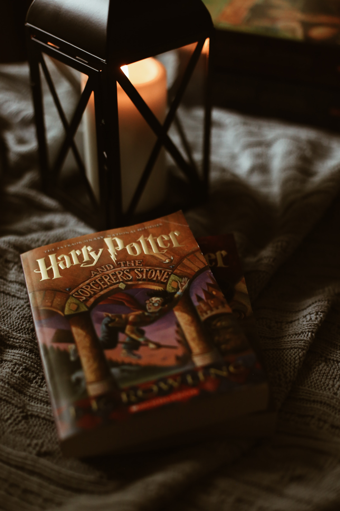

영국의 작가 J. K. 롤링의 판타지 소설 해리 포터 시리즈의 주인공. 풀 네임은 해리 제임스 포터 
과거 볼드모트의 악행으로부터 유일하게 생존한 인물. 일명 살아남은 아이다. 생년월일은 1980년 7월 31일이다. 부모는 제임스 포터와 릴리 포터, 대부는 시리우스 블랙. 론 위즐리와는 형제 같은 친구이며 그의 부모인 아서 위즐리와 몰리 위즐리는 거의 양부모나 다름없다. 이모부와 이모에게 유년 시절 아동 학대를 당했다.
아버지인 제임스 포터와 완전히 판박이로 닮았으나 눈동자만은 초록색으로 어머니인 릴리 포터를 빼닮았다.[17] 이 때문에 다른 인물들에 비해 외양에 대한 서술이 월등히 많다. 해리의 눈동자 빛깔은 후반부에 가서 중요한 역할을 하게 된다. 영화에서는 1편 전반부에서만 눈 색깔이 녹색이고 나머지는 파란색으로 나온다. 이유는 담당 배우 다니엘 래드클리프가 컬러렌즈를 장시간 착용할 수 없던 탓이다.